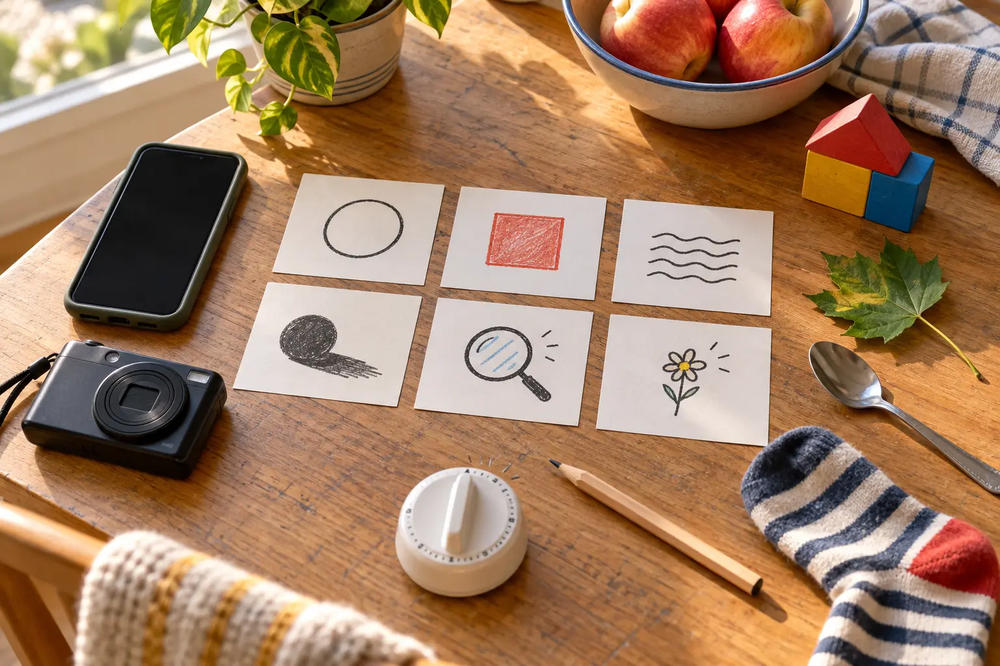

Shape
Photograph a circle, triangle or repeating line without moving the object.
Look for: crop and angle.
AFTER SCHOOL · 30 MINUTES · AGES 6–12 · NO SPEND
One device, six visual clues and no public posting: make ordinary objects look interesting, pick five keepers, then put the phone away.

Use a phone in airplane mode, an ordinary digital camera or no camera at all—children can frame each image with their hands and sketch it. Add six scrap-paper clue cards, a pencil and a visible timer. There is nothing to buy. If a child already has a camera, the kids’ camera decision guide explains the transfer and privacy path; this activity works just as well on the adult’s device.
Before starting, clear notifications, close messages and hide private albums. The adult controls unlocking, location settings and file transfer. Do not create an account, enable a social feed or accept a trial subscription for a 30-minute family game.
Choose one zone: kitchen and living room, fenced yard, porch, or a short familiar loop with an adult. Name the hard stops: no bedrooms, medicine, documents, screens, mail, license plates, house numbers, private notes, school logos, faces, strangers or animals approached for a shot. No climbing, opening closed spaces or stepping into a road, parking lot or water edge.
Decide who holds the device and how turns work. With siblings, use two minutes per turn or one clue per child. The photographer asks before moving another person’s object. The adult can veto a frame without a privacy debate.
Draw a clue card, make one frame, then try exactly one change: move closer, lower the camera, rotate the device or wait for different light. Do not spray twenty nearly identical images. After the second try, move to the next clue.
Keep the device strap secure and two hands on the camera while walking. Stop moving before looking through the screen. If outdoors, use the family walking-visibility guide only as a supplement to a safe daylight route—not as permission to hunt near traffic after dark.
Sit down before reviewing. Each child chooses one clear frame, one surprising frame and one frame that needs improvement. Keep no more than five total. Delete accidental faces, addresses, school information, private screens and obvious duplicates before the device leaves the adult’s control.
Ask three questions: What is the subject? What did the edge of the frame accidentally include? What one change would make the idea clearer? “I like it” is allowed. The point is attention, not a formal critique.
Give each keeper a spoken title or write titles on paper. Do not add names, a home location or a child’s schedule to the file. Return objects, wipe the table, plug in the device if needed and end. The photos can stay on the family device, become a private contact sheet later or be deleted after the conversation.
No social post is required for the activity to count. Public sharing changes the privacy problem: background details, file metadata, uniforms, reflections and repeated routines can reveal more than the obvious subject. The clean default is local family review only.
If an adult later chooses to share, review the original at full size, remove private details, understand the platform’s current audience and metadata behavior, and obtain appropriate permission from every identifiable person. Cropping a face does not necessarily remove a name written in the background or a reflection. “Friends only” is a platform setting, not a promise that an image cannot be copied.
Indoor: use shape, texture, reflection and story pair. This is the weather-proof default. Yard or porch: use color, tiny detail, shadow, leaf and bark without picking living material. Short neighborhood loop: keep the adult beside the child, stay on a familiar legal route and photograph objects that do not identify people or homes.
Low-energy version: sit in one chair and find three frames without standing. Use spoon reflection, fabric texture and a two-object story. No-device version: each child makes a rectangle with their hands, describes the frame and sketches one keeper. Sensory-friendly version: remove the timer sound, use three predictable clues and allow the child to observe without holding the device.
Rain moves the whole hunt indoors; do not protect the phone by putting a child or adult in an unsafe position. If the child cannot find a clue, switch from “find the best” to “find any example,” then make one angle change. If siblings argue about turns, place the device on the table and finish with hand frames or sketches. If the adult starts correcting every choice, hand the child one clue and become the note-taker.
The clean exit is three photos and one title. Do not extend the timer to “get the good one.” A short activity that ends with interest intact beats a forced portfolio.
Choose objects at the child’s reach and bring them to a stable table instead of requiring floor work, stairs or crouching. A child with low vision can hunt for high contrast, strong light, large shapes or textures by touch and describe the frame while an adult operates the camera. A child with limited motor control can direct angle and distance while a partner holds the device.
Use the device’s current accessibility features only after the adult understands them. Voice control, screen reading and magnification can help, but do not turn on cloud sharing, face grouping or a new account just to complete the hunt.
For an outdoor version with magnification, use the ethical nature-observation kit and its observe-record-release rule. For a device-free senses activity, use the 20-minute sound map. For a longer daylight walk, the after-school nature mission keeps the route and return time primary.
Put one future hunt on the family calendar reset only if the child asks for it. Possible next themes are “three kinds of light,” “one color in six places” or “before and after cleanup.” Do not create a daily content quota for a child.
Use the no-device version when screens trigger conflict, the only available device contains sensitive work or health information, or the adult cannot supervise files. Keep the hunt entirely indoors if darkness, weather, traffic or mobility makes the route harder than the activity is worth. Skip public-space photography when the family cannot reliably avoid strangers and identifying details.
MAKE THE DAY COUNT
Build the plan your family can finish well, then leave enough energy for the next part of the day.
More family plans